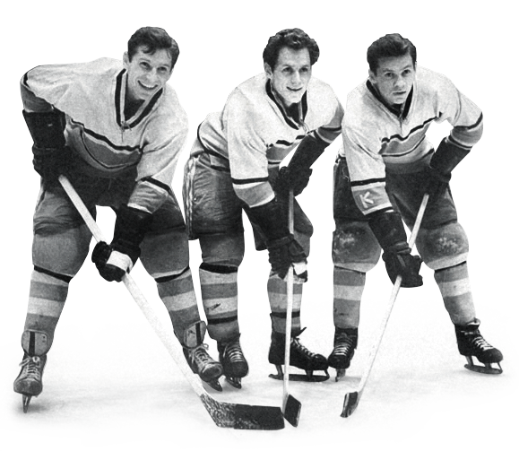
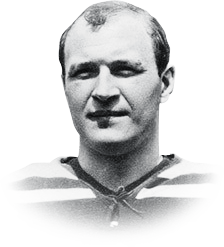

«Пятилетка накопления сил». Так можно назвать этот временной отрезок. В эти годы спартаковцы не имели сильного состава, котировались пятыми из пяти московских команд. Про ЦСКА (ЦСК МО) и «Динамо» и говорить нечего, но очень сильны были «Крылья Советов» и «Локомотив». «Крылышки», базировавшиеся тогда не так далеко от Сокольников, на одноимённом стадионе на нынешнем проспекте Будённого, завоевали в этот период своё первое чемпионство из двух в истории команды. Наивысшее место, которое заняли красно-белые в этих пяти чемпионатах — пятое.
Но всё для «Спартака» только начиналось, создавались предпосылки для будущего расцвета. Известна точная дата образования величайшей старшиновской тройки. 19 октября 1958 года юный Вячеслав Старшинов впервые занял место центрфорварда тройки с братьями Майоровыми в матче против ЦСК МО. Братья сначала не воспринимали нового партнёра, считали его угловатым и медленным, но тренер Александр Игумнов настоял на своём решении, став крёстным отцом этого сочетания.

Вячеслав Старшинов
и братья Майоровы
Также спартаковцы в этот период сыграли свой первый в истории международный матч. В октября 1956 года правительства СССР и Японии подписали совместную Декларацию о прекращении состояния войны и восстановлении дипломатических отношений. На волне важных политических событий в Москву пожаловала сборная Японии по хоккею с шайбой, позже принявшая участие в чемпионате мира, проходившем в нашей столице. Матч с японской сборной, само собой, выиграл «Спартак» — 4:1.
Интересное нововведение этого периода — так называемые турниры с гандикапом. Перед началом каждого матча авторитетная комиссия решала, какую фору даёт фаворит матча. Участники до конца игры её не знали, конверт открывался только после окончания матча. Три года подряд такие турниры проводились на льду катка «Сокольники» в сентябре, перед началом чемпионата.

Валерий
Кузьмин
В эти пять лет в команду стали приходить игроки, на которых позже ляжет основная нагрузка в завоевании чемпионских титулов. Про Бориса и Евгения Майорова, Вячеслава Старшинова уже говорилось, но хочется остановиться на такой знаковой фигуре, как защитник Валерий Кузьмин. Не проходя в состав московского «Локомотива», Кузьмин перешёл в «Спартак», с которым позже завоевал три золотых медали чемпионатов СССР, добавив к ним четвёртую, выигранную в составе «Крыльев» в 1974 году. Получается, Кузьмин — уникальный хоккеист, ставший четырёхкратным чемпионом СССР не в составе армейской команды.
С Валерием Борисовичем Кузьминым может поспорить только Валерий Иванович Фоменков, имевший отношение ко всем чемпионствам «Спартака». Три он выиграл как игрок, ещё одно, как тренер. Вот такие глыбы стали появляться в «Спартаке» в те годы.